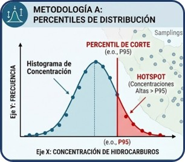
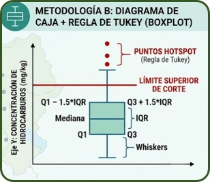

Integración de monitoreos ambientales, análisis normativo y cobertura vegetal mediante técnicas de ciencia de datos
Los pasivos ambientales hidrocarburíferos representan una fuente relevante de riesgo para los ecosistemas de la región Piura. La presencia histórica de actividades petroleras ha generado la necesidad de evaluar tanto la distribución de contaminantes como sus posibles efectos sobre el ambiente.
Este dashboard integra información geoespacial, monitoreos ambientales, análisis normativo y herramientas de ciencia de datos para apoyar una evaluación integral de la problemática.
El área de estudio corresponde a zonas intervenidas por actividades hidrocarburíferas en la región Piura.
map_piura.htmlLa distribución espacial de hidrocarburos totales del petróleo permite identificar sectores con mayores concentraciones y posibles patrones territoriales.
fig_htp.htmlSe aplicaron diferentes enfoques estadísticos para detectar concentraciones anómalas dentro de la distribución de datos observada.


Además de los hidrocarburos totales del petróleo, se analizaron otros parámetros fisicoquímicos relevantes para complementar la caracterización ambiental de los sitios evaluados.
Los resultados permiten comparar las concentraciones observadas en suelo con los valores de referencia establecidos por la normativa vigente.
La evaluación en agua proporciona evidencia complementaria para interpretar la magnitud de los impactos potenciales asociados a la presencia de hidrocarburos.
La respuesta ecológica fue evaluada mediante indicadores de vegetación derivados de imágenes satelitales.
La distribución de los valores de NDVI permite examinar posibles diferencias entre sectores con distintas condiciones ambientales.
La información de MapBiomas aporta contexto territorial y permite interpretar los resultados ambientales dentro de la dinámica del uso y cobertura del suelo.
La caracterización de la cobertura terrestre complementa la evaluación ambiental mediante una perspectiva regional.
Se exploró la relación entre las concentraciones de hidrocarburos y los indicadores de vegetación.